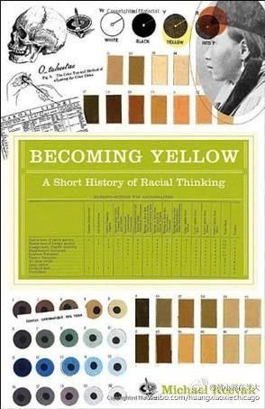

好冗长啊。不过黄种人确实是在英语里看不到任何人用，连黑人的说法也不会出现在正式文档中。当然“Asian"和"African"的叫法是不是换汤不换药，咱也说不好。//@Escudo:算科普吗？还是很难理解诶@黄小邪看电影:因宁泽涛游泳得冠军有人自我宣称为“黄种人”，此文值得一读：《变成黄种人》：“种族思维”的发展简史：在西方学术著作与公众媒体上已很难找到…“黄色人种”这样对东亚的标签。不幸的是，这些标签及其代表的种族思维在两百多年来种族思维受害地区如中国，却还远远没有成为陈迹 网页链接 